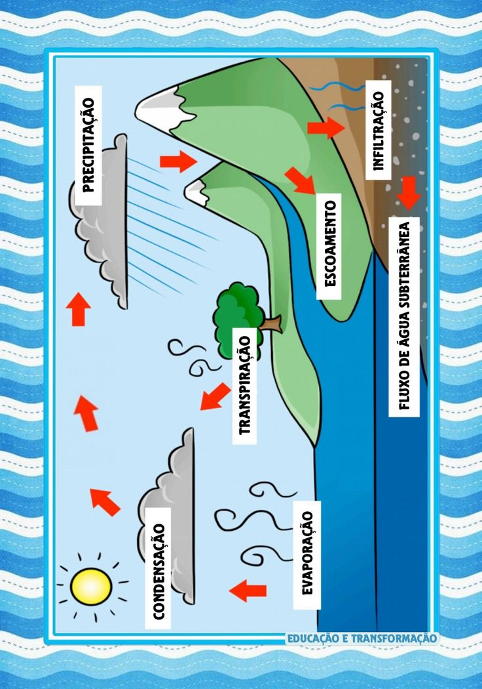

O ciclo da água, também conhecido como ciclo hidrológico, é um processo contínuo e vital que representa a circulação da água na Terra. Esse ciclo envolve a evaporação da água da superfície da Terra, sua subsequente condensação na atmosfera, a formação de nuvens e a precipitação de volta à superfície na forma de chuva, neve, granizo ou outras formas de precipitação.
É um permanente processo de transformação da água na natureza, passando de um estado para outro (líquido, sólido ou gasoso).
